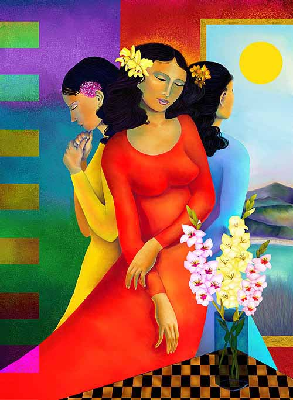

Ileana Frómeta Grillo
DIGITAL COLLAGE
Ileana writes, " 'Dreaming Venezuelan' is a symbolic representation of my country of origin and was created and developed entirely with Painter 6.0.3. Painter is an intuitive program well-suited for anyone with a fine arts background. This image was selected by United Digital Artists to feature in their Winter/Spring Catalog."
|
 |